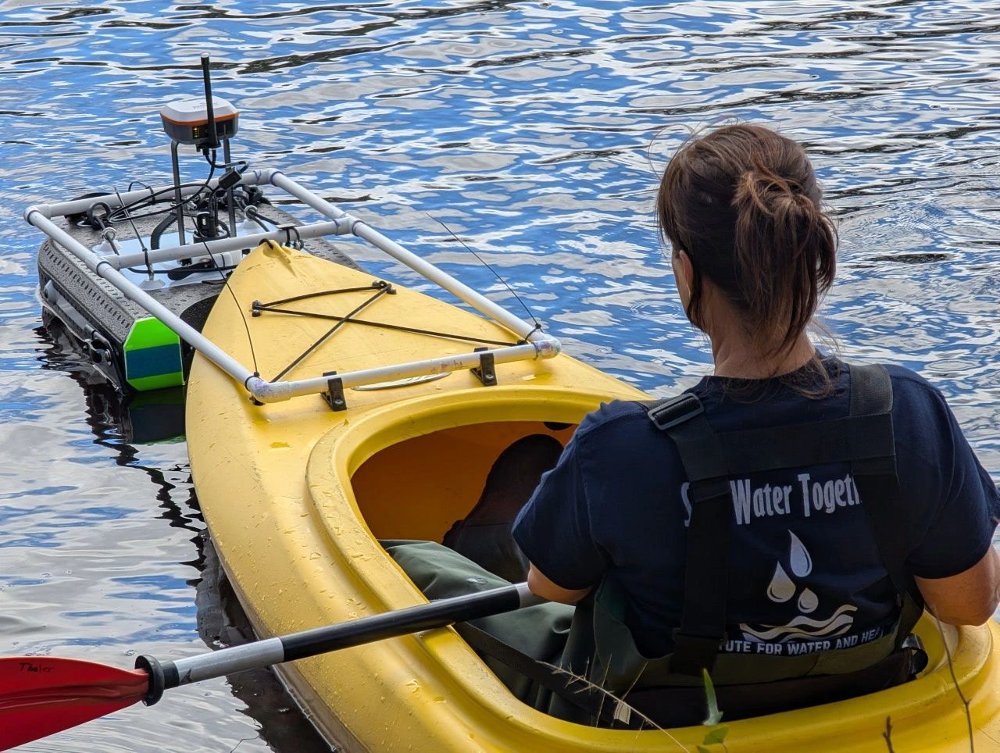

Research infrastructure, consortia, and programs led by Asli Aslan
Georgia Southern University (2022–present)
Safe water, a sustainable environment, and resilient communities
The Institute for Water and Health (IWH) bridges science and technology to action. Located at the Savannah Research Complex near the Armstrong Campus, the Institute operates state-of-the-art research laboratories that translate scientific progress into practical technological solutions for water quality, environmental health, and community resilience.

From the Director
“Access to safe water is a global challenge. It unlocks economic development, improves health, and provides opportunities.”
Dr. Asli Aslan, IWH Director
Nature-Based Water & Wastewater Treatment
Rapid Detection & Source Tracking of Water Contaminants
Water, Ecosystems & Community Health
Global Water, Sanitation & Hygiene (WASH) Solutions
Institute for Water and Health
925 Mohawk Street, Savannah, GA 31419
912-478-2565 · IWH@georgiasouthern.edu
Michigan State University (2009–2013)
Towards a healthier water environment
The International Collaboration for Sewage (IC-Sewage) is a global research network co-directed by Dr. Aslan at Michigan State University, connecting 28 countries and 41 laboratories to standardize microbial source tracking (MST) methods for detecting sewage and fecal contamination in surface waters worldwide. The consortium was funded by the International Water Association (IWA).